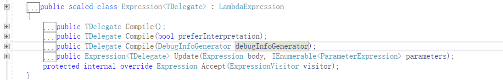

原文连接:https://www.cnblogs.com/whuanle/p/11562372.html
表达式树练习实践：入门基础

什么是表达式树
来自微软官方文档的定义：
表达式树以树形数据结构表示代码。
它能干什么呢？
你可以对表达式树中的代码进行编辑和运算。 这样能够动态修改可执行代码、在不同数据库中执行 LINQ 查询以及创建动态查询。
好不好玩？
表达式树还能用于动态语言运行时 (DLR) 以提供动态语言和 .NET Framework 之间的互操作性，同时保证编译器编写员能够发射表达式树而非 Microsoft 中间语言 (MSIL)。
哪里有应用？
ORM框架、工作流框架等，使用到 Lambda 的代码。。。动态执行代码、动态组装代码等。
创建表达式树
创建表达式树有两种方式：通过 lambda 表达式、通过 API。
创建表达式树的意思是，在此之前已经编写好每个结点，最后使用代码将所有结点组合起来，生成表达式树。
示例(通过API创建表达式树)
```
ParameterExpression a = Expression.Parameter(typeof(int), "i");
ParameterExpression b = Expression.Parameter(typeof(int), "j");
Expression r1 = Expression.Multiply(a, b); //乘法运行
ParameterExpression c = Expression.Parameter(typeof(int), "x");
ParameterExpression d = Expression.Parameter(typeof(int), "y");
Expression r2 = Expression.Multiply(c, d); //乘法运行
Expression result = Expression.Add(r1, r2); //相加
//以上代码产生结点
//生成表达式
Expression<Func<int, int, int, int, int>> func = Expression.Lambda<Func<int, int, int, int, int>>(result, a, b, c, d);
var com = func.Compile();
Console.WriteLine("表达式" + func);
Console.WriteLine(com(12, 12, 13, 13));
Console.ReadKey();上面关于表达式树的代码很多，以下这一步叫生成/创建表达式树。
Expression<Func<int, int, int, int, int>> func = Expression.Lambda<Func<int, int, int, int, int>>(result, a, b, c, d);以下这句叫执行表达式树
var com = func.Compile();其它代码是用于生成表达式树结点/逻辑。
回归正题，创建表达式树的两种方法。
lambda 创建表达式树
上面的表达式树示例，是用于生成
( i * j ) + ( x * y ) 但是就这么简单的操作，要写这么长，实在不合理。
而通过 lambda ，可以这样写
Expression<Func<int, int, int, int, int>> func = (i, j, x, y) => (i * j) + (x * y);如果使用 lambda 生成表达式树， lambda 只能使用单行语句，不能使用 if、for等语句。
具体关于 Lambda 的表达式树，后面其它文章有说明。
通过 API 创建表达式树
就是这样
Expression<Func<int, int, int, int, int>> func = Expression.Lambda<Func<int, int, int, int, int>>(result, a, b, c, d);两种方式左边的都是一样的，区别在于等号右边。
Expression< TDelegate >
上面示例的最终结果都是生成
Expression<Func<int, int, int, int, int>> func func 是表达式树变量。
我们可以了解以下表达式树具有的方法和属性。
用于生成表达式树结点的，是 Expression 类型。
那么，创建的表达式树 func ，是 Expression<TDelegate>类型。
定义如下
public sealed class Expression<TDelegate> : LambdaExpression具有方法如下

| 方法 | 说明 |
|---|---|
| Compile() | 将表达式树描述的 lambda 表达式编译为可执行代码，并生成表示 lambda 表达式的委托。 |
| Compile(Boolean) | 将表达式树描述的 Lambda 表达式编译为已解释或已编译的代码，并生成表示该 Lambda 表达式的委托。 |
| Compile(DebugInfoGenerator) | 将 lambda 编译到方法定义中。 (Inherited from LambdaExpression) |
| Update(Expression, IEnumerable |
创建一个与此表达式类似的新表达式，但使用所提供的子级。 如果所有子级都相同，则将返回此表达式。 |
| Accept(ExpressionVisitor) | 调度到此节点类型的特定 Visit 方法。 例如，MethodCallExpression调用 VisitMethodCall。 |
由于 Expression<TDelegate> 继承了 LambdaExpression，所以有很多属性方法也可以用。
| Body | 获取 lambda 表达式的主体。 |
|---|---|
| CanReduce | 指示可将节点简化为更简单的节点。 如果返回 true，则可以调用 Reduce() 以生成简化形式。 |
| Name | 获取 lambda 表达式的名称。 |
| NodeType | 返回此 Expression 的节点类型。 |
| Parameters | 获取 lambda 表达式的参数。 |
| ReturnType | 获取 lambda 表达式的返回类型。 |
| TailCall | 获取一个值，该值指示是否将通过尾调用优化来编译 lambda 表达式。 |
| Type | 获取此 Expression 表示的表达式的静态类型。 |
好了，以上权当小笔记，备忘，目前先用不上，后面慢慢来使用。
解析/执行表达式树
创建表达式树后，就要执行表达式树。
在此之前，你需要了解 委托 Delegate，Func，Action，以及他们中间的关系。
执行表达式树是这样子的
Expression<Func<int, int, int, int, int>> func = Expression.Lambda<Func<int, int, int, int, int>>(result, a, b, c, d);
var com = func.Compile();
var runRasult = com(12, 12, 13, 13);func 只是一个表达式树，我们把表达式树构建好后，“要将表达式树转为代码”，使用
.Compile() 方法，可以将表达式树生成一个 委托(例如上面的 com)。
为了简洁上面使用了 var，实际上是这样的
Func<int,int,int,int,int> com = func.Compile();四个参数，一个返回值。
var runRasult = com(12, 12, 13, 13);C#里有语法糖，对委托可以这样写
Expression<Func<int, int, int, int, int>> func = Expression.Lambda<Func<int, int, int, int, int>>(result, a, b, c, d);
int runRasult = func.Compile()(12, 12, 13, 13);以后后面都是这样写了，能够缩成一行的代码，就没必要写出两行。
在 Vs 里面调试和查看表达式树，可以看这里
初学者不必纠结于这些，了解一下本文内容，记一下概要信息即可。